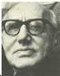

NORBERT ELIAS
Sosyolojik sorunlara felsefi derinlikten bakan ve düşünce gelenekleriyle hesaplaşan bir düzeyden konuşan Elias bu kitabında zaman sorunu üzerine gidiyor.
Varlığını alabildiğine somut bir şey gibi düşündüğümüz, sürekli akan ve akarken bizi de kendi tünelinden geçiren zaman gerçekten öyle somut bir şey mi? Elias zamanın “var olan bir şey” olmadığını, onun bizim toplumsal, tarihsel bir eserimiz olduğunu söylüyor. Peki zaman bizim zihnimizin bir imgesi ise, gerçekteki olaylarla, değişimlerle bağlantısı nedir? Nasıl oluyor da böyle var olmayan bir şey algımızda doğallık, somutluk kazanıyor. Bizi metafiziğin girdaplarına götürecek gibi görünen bu sorular, Elias’ın elinde tümüyle maddi açıklamalar buluyor. Zamanın izini toplumsal ilişkilerde ve tarihsel gelişim içinde süren Elias, basit gibi görünen açıklamalara uzanıyor; basit, ama günümüz toplumunun insanlarının kavramakta zorlandığı sorunlara.
Zaman incelemesi, aynı anda bir uygarlaşma incelemesi. Uygarlaşma süreçlerinin yapısı üzerinde duran ve her uygarlaşma adımının tarihsel bir sürecin kaçınılmaz kısıtlanmalarını da içerdiğini vurgulayan Elias, başka çalışmalarında genelde uygarlaşma hakkında söylediklerini, bu çalışmasında zaman olgusu üzerinden somutlaştırıyor. Bu tür bir incelemeyle modern toplum olmanın anlamı, toplumsal gelişme süreçlerinin karakteri, birey-toplum ilişkilerinin iç içeliği belirginleşiyor... Elias günümüzde tarih incelemelerinin, sosyolojinin ve genel olarak bilimsel disiplinler arasındaki yalıtılmışlığın bütünsel bakışı nasıl kısıtladığını ve naifliğimizi niçin aşılması çok zor bir duruma dönüştürdüğünü zaman sorunu üzerinden sergiliyor. Kitapta zamanın bugünün toplumu açısından yapısal özelliklerini ve geçmiş toplum formasyonlarının “zamansız” yaşamalarının ne demek olduğunu görmekle kalmıyoruz; zaman üzerine düşünmek, kendi algılarımız üzerine düşünmek, uygarlaşma meselesine göreceli bakmak ve bireysel özgürlüğün toplumsal belirlenmişlikten bağımsız düşünülemeyeceğini görmek anlamına da geliyor.
Batılılaşma çabası içinde olan toplumumuzun işinin niçin zor olduğunu bu kitapta yapıldığı biçimiyle zaman incelemesi üzerinde düşünerek biraz daha iyi anlayabiliriz.

Zaman kavramının toplumun işleyişiyle ve bireylerin toplumsal rolüyle ilişkisi ortaya çıktıkça, Batı’nın zamanla kurduğu ilişkilerin, bizim gibi yarı feodal kültürel yapısından kurtulamamış bir topluma niçin bire bir aktarılamayacağı da daha iyi anlaşılıyor. Bu sorun, Elias’ın metninde özel bir vurgu taşımasa da bu yöndeki okumalara ve düşüncelere fazlasıyla olanak tanıyor.